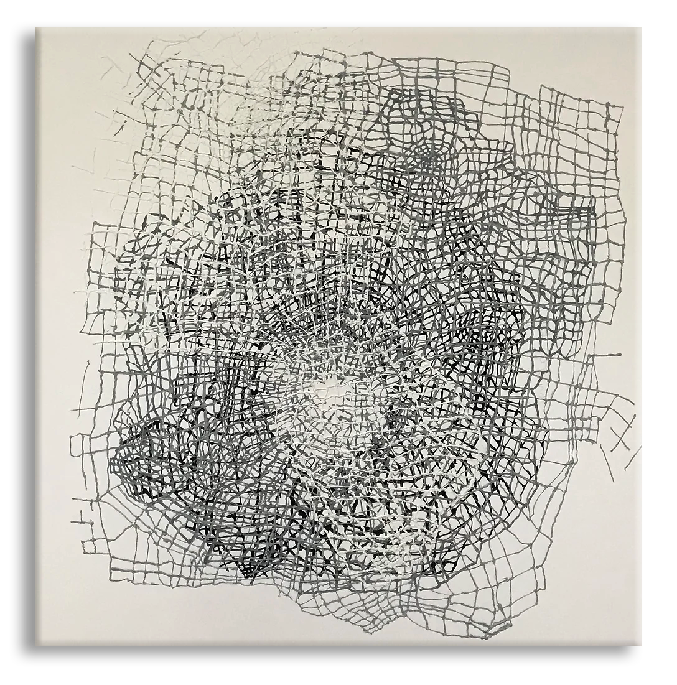

“In a time when everything moves quickly and many of us long for depth and reflection, I strive to create spaces that feel genuine—both on canvas and in the digital realm."
- Gabriella Kauffmann, The Artist.
Structures in Net
Refelction of modern life

Exploring vitality in relations